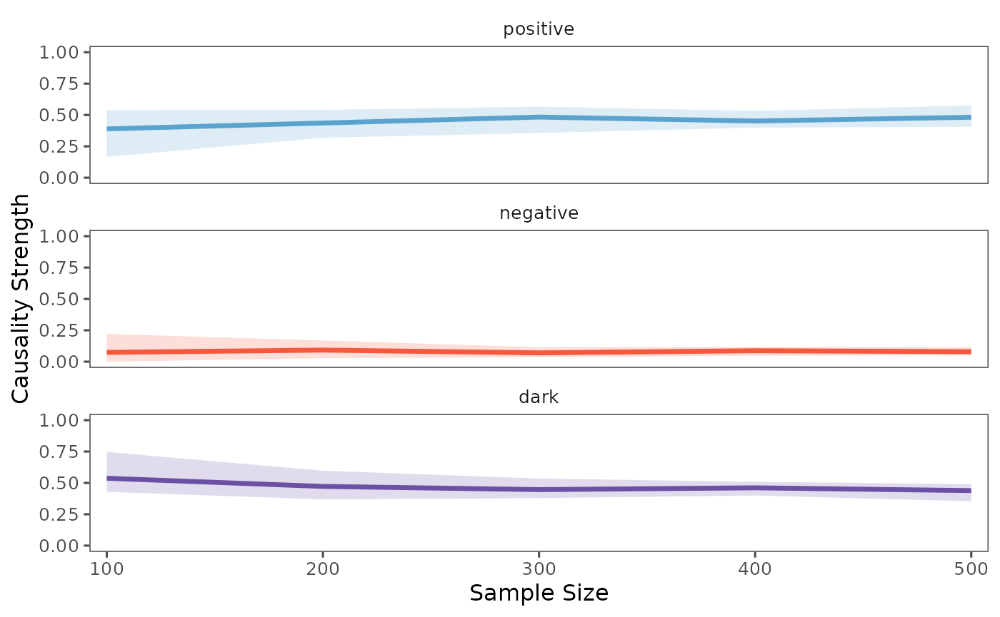

Unveiling Causal Relationships in Time Series Data
Stavros Stavroglou, Athanasios Pantelous, Hui Wang
Source:vignettes/series.Rmd
series.RmdThis vignette demonstrates advanced techniques for examining causal
relationships between time series using the
patterncausality package. We will focus on three key
aspects:
- Cross-validation methods: To rigorously assess the robustness of our findings, ensuring they are not mere artifacts of the data.
- Parameter optimization: To fine-tune our analysis for the most accurate and reliable results.
- Visualization of causality relationships: To provide clear and intuitive insights into the causal connections between time series.
Through cross-validation, we aim to understand:
- Reliability of results: How dependable are our conclusions?
- Robustness across different sample sizes: Do our findings hold true regardless of the amount of data used?
- Stability of causality patterns: Are the identified causal relationships consistent over time and across different data subsets?
Cross-Validation: Ensuring the Reliability of Causal Inference
To demonstrate the application of cross-validation, we will begin by
importing a climate dataset from the patterncausality
package.
library(patterncausality)
#> Error in get(paste0(generic, ".", class), envir = get_method_env()) :
#> object 'type_sum.accel' not found
data(climate_indices)Now, let’s apply cross-validation to evaluate the robustness of pattern causality. We will use the Pacific North American (PNA) and North Atlantic Oscillation (NAO) climate indices as our example time series.
set.seed(123)
X <- climate_indices$PNA
Y <- climate_indices$NAO
result <- pcCrossValidation(
X = X,
Y = Y,
numberset = seq(100, 500, by = 10),
E = 3,
tau = 2,
metric = "euclidean",
h = 1,
weighted = FALSE
)
print(result$results)
#> , , positive
#>
#> value
#> 100 0.4444444
#> 110 0.3548387
#> 120 0.1851852
#> 130 0.3157895
#> 140 0.3157895
#> 150 0.4444444
#> 160 0.3571429
#> 170 0.3750000
#> 180 0.3469388
#> 190 0.2291667
#> 200 0.3478261
#> 210 0.3653846
#> 220 0.3000000
#> 230 0.3939394
#> 240 0.3230769
#> 250 0.2881356
#> 260 0.3166667
#> 270 0.3055556
#> 280 0.2753623
#> 290 0.3625000
#> 300 0.3382353
#> 310 0.3068182
#> 320 0.3690476
#> 330 0.2375000
#> 340 0.2727273
#> 350 0.2608696
#> 360 0.3409091
#> 370 0.3414634
#> 380 0.2826087
#> 390 0.3522727
#> 400 0.2980769
#> 410 0.3548387
#> 420 0.3238095
#> 430 0.2803738
#> 440 0.2844037
#> 450 0.3083333
#> 460 0.2905983
#> 470 0.2941176
#> 480 0.3120000
#> 490 0.2892562
#> 500 0.3030303
#>
#> , , negative
#>
#> value
#> 100 0.16666667
#> 110 0.06451613
#> 120 0.29629630
#> 130 0.07894737
#> 140 0.18421053
#> 150 0.25925926
#> 160 0.21428571
#> 170 0.12500000
#> 180 0.14285714
#> 190 0.35416667
#> 200 0.17391304
#> 210 0.30769231
#> 220 0.32000000
#> 230 0.18181818
#> 240 0.10769231
#> 250 0.30508475
#> 260 0.13333333
#> 270 0.29166667
#> 280 0.31884058
#> 290 0.11250000
#> 300 0.11764706
#> 310 0.17045455
#> 320 0.13095238
#> 330 0.25000000
#> 340 0.23863636
#> 350 0.29347826
#> 360 0.17045455
#> 370 0.14634146
#> 380 0.23913043
#> 390 0.13636364
#> 400 0.25000000
#> 410 0.15053763
#> 420 0.16190476
#> 430 0.24299065
#> 440 0.21100917
#> 450 0.25000000
#> 460 0.22222222
#> 470 0.24369748
#> 480 0.22400000
#> 490 0.23140496
#> 500 0.22727273
#>
#> , , dark
#>
#> value
#> 100 0.3888889
#> 110 0.5806452
#> 120 0.5185185
#> 130 0.6052632
#> 140 0.5000000
#> 150 0.2962963
#> 160 0.4285714
#> 170 0.5000000
#> 180 0.5102041
#> 190 0.4166667
#> 200 0.4782609
#> 210 0.3269231
#> 220 0.3800000
#> 230 0.4242424
#> 240 0.5692308
#> 250 0.4067797
#> 260 0.5500000
#> 270 0.4027778
#> 280 0.4057971
#> 290 0.5250000
#> 300 0.5441176
#> 310 0.5227273
#> 320 0.5000000
#> 330 0.5125000
#> 340 0.4886364
#> 350 0.4456522
#> 360 0.4886364
#> 370 0.5121951
#> 380 0.4782609
#> 390 0.5113636
#> 400 0.4519231
#> 410 0.4946237
#> 420 0.5142857
#> 430 0.4766355
#> 440 0.5045872
#> 450 0.4416667
#> 460 0.4871795
#> 470 0.4621849
#> 480 0.4640000
#> 490 0.4793388
#> 500 0.4696970To better visualize the results, we will use the plot
function to generate a line chart.
plot(result)
As you can see from the plot, the location of the causality tends to stabilize as the sample size increases. This indicates that our method is effective at capturing the underlying patterns and causal connections within the time series.
In this tutorial, you’ve learned how to use cross-validation to assess the reliability of time series causality and how to use visualization tools to better understand the results.
Cross-Validation: Convergence of Pattern Causality
Now, let’s examine the cross-validation process when the
random parameter is set to FALSE. This
approach uses a systematic sampling method rather than random
sampling.
set.seed(123)
X <- climate_indices$PNA
Y <- climate_indices$NAO
result_non_random <- pcCrossValidation(
X = X,
Y = Y,
numberset = seq(100, 500, by = 10),
E = 3,
tau = 2,
metric = "euclidean",
h = 1,
weighted = FALSE,
random = FALSE
)
print(result_non_random$results)
#> , , positive
#>
#> value
#> 100 0.2941176
#> 110 0.2631579
#> 120 0.2500000
#> 130 0.2307692
#> 140 0.2068966
#> 150 0.2187500
#> 160 0.2571429
#> 170 0.2564103
#> 180 0.2444444
#> 190 0.2291667
#> 200 0.2400000
#> 210 0.2592593
#> 220 0.2758621
#> 230 0.2881356
#> 240 0.2903226
#> 250 0.2835821
#> 260 0.2941176
#> 270 0.3043478
#> 280 0.3055556
#> 290 0.2972973
#> 300 0.2972973
#> 310 0.2987013
#> 320 0.2875000
#> 330 0.2891566
#> 340 0.2873563
#> 350 0.2921348
#> 360 0.2795699
#> 370 0.2812500
#> 380 0.2673267
#> 390 0.2745098
#> 400 0.2692308
#> 410 0.2803738
#> 420 0.2909091
#> 430 0.2946429
#> 440 0.3017241
#> 450 0.3025210
#> 460 0.3057851
#> 470 0.3008130
#> 480 0.2960000
#> 490 0.3070866
#> 500 0.3000000
#>
#> , , negative
#>
#> value
#> 100 0.1764706
#> 110 0.1578947
#> 120 0.1666667
#> 130 0.2307692
#> 140 0.2413793
#> 150 0.2500000
#> 160 0.2285714
#> 170 0.2564103
#> 180 0.2888889
#> 190 0.3125000
#> 200 0.3200000
#> 210 0.3148148
#> 220 0.3275862
#> 230 0.3220339
#> 240 0.3064516
#> 250 0.3283582
#> 260 0.3235294
#> 270 0.3188406
#> 280 0.3055556
#> 290 0.3108108
#> 300 0.3108108
#> 310 0.3116883
#> 320 0.3125000
#> 330 0.3012048
#> 340 0.2988506
#> 350 0.2921348
#> 360 0.2795699
#> 370 0.2812500
#> 380 0.2673267
#> 390 0.2647059
#> 400 0.2596154
#> 410 0.2523364
#> 420 0.2454545
#> 430 0.2410714
#> 440 0.2327586
#> 450 0.2268908
#> 460 0.2314050
#> 470 0.2357724
#> 480 0.2320000
#> 490 0.2283465
#> 500 0.2307692
#>
#> , , dark
#>
#> value
#> 100 0.5294118
#> 110 0.5789474
#> 120 0.5833333
#> 130 0.5384615
#> 140 0.5517241
#> 150 0.5312500
#> 160 0.5142857
#> 170 0.4871795
#> 180 0.4666667
#> 190 0.4583333
#> 200 0.4400000
#> 210 0.4259259
#> 220 0.3965517
#> 230 0.3898305
#> 240 0.4032258
#> 250 0.3880597
#> 260 0.3823529
#> 270 0.3768116
#> 280 0.3888889
#> 290 0.3918919
#> 300 0.3918919
#> 310 0.3896104
#> 320 0.4000000
#> 330 0.4096386
#> 340 0.4137931
#> 350 0.4157303
#> 360 0.4408602
#> 370 0.4375000
#> 380 0.4653465
#> 390 0.4607843
#> 400 0.4711538
#> 410 0.4672897
#> 420 0.4636364
#> 430 0.4642857
#> 440 0.4655172
#> 450 0.4705882
#> 460 0.4628099
#> 470 0.4634146
#> 480 0.4720000
#> 490 0.4645669
#> 500 0.4692308We can also visualize the results of the non-random cross-validation:
plot(result_non_random)
By comparing the results of the random and non-random cross-validation, you can gain a deeper understanding of how different sampling methods affect the stability and reliability of the causality analysis.
Cross-Validation with Bootstrap Analysis
To obtain more robust results and understand the uncertainty in our causality measures, we can use bootstrap sampling in our cross-validation analysis. This approach repeatedly samples the data with replacement and provides statistical summaries of the causality measures.
set.seed(123)
X <- climate_indices$PNA
Y <- climate_indices$NAO
result_boot <- pcCrossValidation(
X = X,
Y = Y,
numberset = seq(100, 500, by = 10),
E = 3,
tau = 2,
metric = "euclidean",
h = 1,
weighted = FALSE,
random = TRUE,
bootstrap = 100 # Perform 100 bootstrap iterations
)The bootstrap analysis provides several statistical measures for each sample size: - Mean: Average causality measure across bootstrap samples - 5% and 95% quantiles: Confidence intervals for the causality measure - Median: Central tendency measure robust to outliers
Let’s examine the results:
print(result_boot$results)
#> , , positive
#>
#> mean 5% 95% median
#> 100 0.3052773 0.05924242 0.5849359 0.2857143
#> 110 0.2767182 0.04166667 0.5432143 0.2763636
#> 120 0.2968089 0.06611111 0.5769231 0.2788889
#> 130 0.3207660 0.09677419 0.5926505 0.3009259
#> 140 0.3114238 0.09737043 0.5688767 0.2880184
#> 150 0.2733549 0.06240530 0.5204706 0.2500000
#> 160 0.2842013 0.08686401 0.5005814 0.2941176
#> 170 0.3093848 0.07630273 0.5508019 0.2954545
#> 180 0.2896200 0.08096011 0.5461818 0.2738636
#> 190 0.2985329 0.10395833 0.5120465 0.2843666
#> 200 0.2783513 0.10770270 0.4725694 0.2727273
#> 210 0.3101155 0.13960377 0.5426352 0.3178211
#> 220 0.2941797 0.12484756 0.5010870 0.2817460
#> 230 0.3164750 0.10754141 0.5358516 0.3134921
#> 240 0.3004838 0.10342292 0.5106774 0.2902216
#> 250 0.3094224 0.15134680 0.5161181 0.2984375
#> 260 0.3031005 0.11412698 0.5161846 0.3017961
#> 270 0.2995752 0.15926178 0.4682679 0.2881702
#> 280 0.2928911 0.09992958 0.4733243 0.2940412
#> 290 0.2927356 0.12962662 0.4431083 0.2902809
#> 300 0.2972179 0.16422385 0.4519238 0.2866071
#> 310 0.3055533 0.12500000 0.4949367 0.3034897
#> 320 0.3125112 0.19064435 0.4414254 0.3081671
#> 330 0.3070165 0.15380090 0.4740506 0.3095238
#> 340 0.2991582 0.16065824 0.4667376 0.2946983
#> 350 0.3047462 0.16477547 0.4753488 0.2993506
#> 360 0.2859928 0.14885778 0.4377841 0.2833498
#> 370 0.3081896 0.17758454 0.4255284 0.3130672
#> 380 0.3151311 0.17966502 0.4898597 0.3152174
#> 390 0.3106445 0.17012909 0.4549761 0.3076923
#> 400 0.3017321 0.19067736 0.4371016 0.2990911
#> 410 0.3063906 0.14730679 0.4957545 0.3095455
#> 420 0.3092444 0.15295164 0.4662966 0.3055341
#> 430 0.2864657 0.14248120 0.4476038 0.2727273
#> 440 0.3146324 0.16809524 0.4650000 0.3090186
#> 450 0.3043380 0.16487019 0.4408663 0.3084010
#> 460 0.3033237 0.16049107 0.4549525 0.2904061
#> 470 0.3096853 0.19507459 0.4716517 0.3011628
#> 480 0.3071327 0.18962123 0.4566795 0.2954643
#> 490 0.2841376 0.17363841 0.3918202 0.2867647
#> 500 0.3160679 0.20329228 0.4289916 0.3195278
#>
#> , , negative
#>
#> mean 5% 95% median
#> 100 0.3004937 0.07692308 0.5626359 0.2886905
#> 110 0.3048394 0.07407407 0.5665020 0.2752525
#> 120 0.3007549 0.05815508 0.5793103 0.3043478
#> 130 0.2885189 0.06636364 0.5874521 0.2412121
#> 140 0.2971638 0.06215278 0.5480159 0.2849899
#> 150 0.3245549 0.09634725 0.5764569 0.2957075
#> 160 0.3046102 0.11641587 0.5115770 0.2841615
#> 170 0.3122090 0.09789916 0.5563492 0.3170732
#> 180 0.3260987 0.12484756 0.5448758 0.3181818
#> 190 0.3107973 0.11482372 0.5107065 0.3225000
#> 200 0.3113821 0.14238095 0.5121513 0.2975848
#> 210 0.2950490 0.10517241 0.4646563 0.2941176
#> 220 0.3038761 0.13579545 0.4850505 0.2991228
#> 230 0.2926206 0.12550728 0.5125469 0.2788889
#> 240 0.2959564 0.11447650 0.4906140 0.2856061
#> 250 0.2828221 0.12839286 0.4517595 0.2692490
#> 260 0.2947585 0.14022989 0.4724948 0.2858313
#> 270 0.3019190 0.15348718 0.4668182 0.2914030
#> 280 0.2979633 0.12822394 0.4943423 0.2940412
#> 290 0.3026539 0.13881944 0.5144765 0.3000000
#> 300 0.2966380 0.15135508 0.4508963 0.2838672
#> 310 0.3081705 0.12696403 0.5009259 0.2951840
#> 320 0.2825170 0.14196429 0.4268171 0.2737263
#> 330 0.2990108 0.17422040 0.4526786 0.2905702
#> 340 0.2986076 0.14262918 0.4634398 0.2966630
#> 350 0.2989537 0.14122838 0.4719586 0.2930081
#> 360 0.3023466 0.16611111 0.4640171 0.2956865
#> 370 0.2944451 0.16651515 0.4518478 0.2892308
#> 380 0.2880145 0.13368376 0.4668333 0.2889082
#> 390 0.2948529 0.16109838 0.4453354 0.2914646
#> 400 0.2970995 0.15667989 0.4264640 0.2913004
#> 410 0.2952150 0.16842278 0.4697279 0.2883317
#> 420 0.2923280 0.14880952 0.4425804 0.2873016
#> 430 0.3179223 0.19685518 0.4970696 0.3063312
#> 440 0.2897331 0.16329576 0.4445065 0.2870013
#> 450 0.2936938 0.17335061 0.4424145 0.2792819
#> 460 0.3010654 0.14504608 0.4653588 0.2839862
#> 470 0.2946882 0.14043829 0.4231231 0.2972199
#> 480 0.2898380 0.15760870 0.4002586 0.2888046
#> 490 0.3026795 0.17541667 0.4462726 0.2897750
#> 500 0.2866023 0.17566233 0.4181586 0.2830124
#>
#> , , dark
#>
#> mean 5% 95% median
#> 100 0.3942290 0.2105263 0.5722689 0.4000000
#> 110 0.4184425 0.2691026 0.5796296 0.4258242
#> 120 0.4024362 0.2350679 0.5718894 0.3969697
#> 130 0.3907151 0.2380952 0.5365148 0.3900966
#> 140 0.3914124 0.2333333 0.5517241 0.3969697
#> 150 0.4020902 0.2432432 0.5485993 0.3920916
#> 160 0.4111885 0.2772222 0.5457680 0.4164087
#> 170 0.3784062 0.2622222 0.5006410 0.3735465
#> 180 0.3842813 0.2496951 0.5278595 0.3780781
#> 190 0.3906698 0.2747917 0.5418561 0.3861643
#> 200 0.4102666 0.2916667 0.5455628 0.4134183
#> 210 0.3948355 0.2751642 0.5105559 0.3917306
#> 220 0.4019441 0.2854637 0.5179258 0.4068287
#> 230 0.3909044 0.2752765 0.5104221 0.3804762
#> 240 0.4035598 0.2940784 0.5085611 0.4048794
#> 250 0.4077556 0.2981275 0.5087265 0.4201449
#> 260 0.4021409 0.3053571 0.4936667 0.4000000
#> 270 0.3985057 0.2931799 0.5000000 0.4045115
#> 280 0.4091456 0.3052778 0.5195339 0.4056013
#> 290 0.4046105 0.3076303 0.4935680 0.4097373
#> 300 0.4061441 0.3177657 0.5000000 0.4049126
#> 310 0.3862762 0.2896480 0.4921356 0.3846154
#> 320 0.4049718 0.3254926 0.4871795 0.4076511
#> 330 0.3939727 0.2918138 0.4880300 0.3988636
#> 340 0.4022341 0.3036678 0.5000000 0.4090630
#> 350 0.3963001 0.2932049 0.4835512 0.3953533
#> 360 0.4116607 0.3238044 0.4952874 0.4161985
#> 370 0.3973653 0.3027724 0.4824074 0.4000000
#> 380 0.3968543 0.3166681 0.4853093 0.3930702
#> 390 0.3945025 0.3017409 0.4821792 0.3980162
#> 400 0.4011684 0.3243886 0.4768946 0.4079651
#> 410 0.3983944 0.2951821 0.4953883 0.4018274
#> 420 0.3984276 0.3245098 0.4848635 0.4038551
#> 430 0.3956120 0.3047582 0.4880681 0.3917031
#> 440 0.3956346 0.3192905 0.4711814 0.4000000
#> 450 0.4019682 0.3256296 0.4850959 0.4008929
#> 460 0.3956109 0.3089349 0.4794781 0.3963024
#> 470 0.3956265 0.3158740 0.4817193 0.3931499
#> 480 0.4030293 0.3230190 0.4746246 0.4058382
#> 490 0.4131828 0.3458916 0.4716316 0.4166667
#> 500 0.3973298 0.3192203 0.4738636 0.4027027We can visualize the bootstrap results using the plot function, which now shows confidence intervals:
plot(result_boot, separate = TRUE)
The shaded area in the plot represents the range between the 5th and 95th percentiles of the bootstrap samples, providing a measure of uncertainty in our causality estimates. The solid line shows the median value, which is more robust to outliers than the mean.